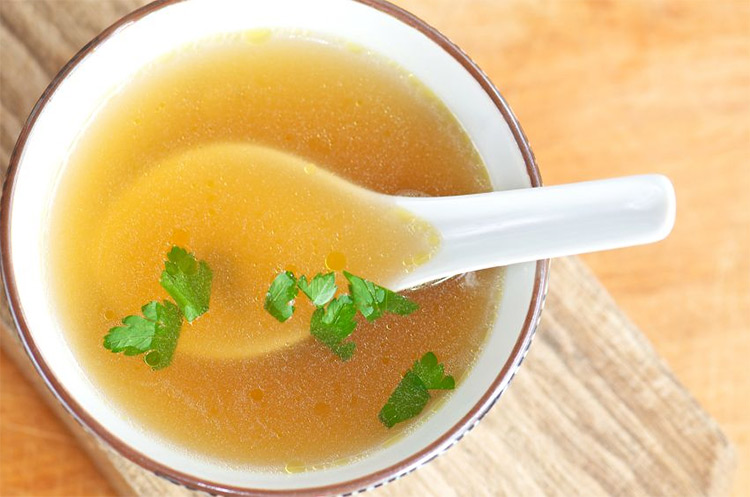

Homemade Chicken Broth Recipe
Home

Description
Discover how easy it is to prepare chicken consomé at home using our homemade chicken
broth recipe, a great alternative to bouillon cubes. Growing up in a family that
prioritized cooking with natural ingredients, I always preferred making broth
from scratch.
Ingredients
- 1 medium red onion, quartered
- 1 head garlic, peeled
- ½ tablespoon oregano (dry, ground), or a few sprigs of fresh oregano
- 1 bunch parsley, or cilantro
- 1 cubanela (cubanelle pepper), seeded and halved (or bell pepper)
- 1 teaspoon allspice berries (malagüeta)
- 1 teaspoon peppercorns
- 1 chicken ribcage and bones,
Directions
- Place chicken, onion, garlic, oregano, parsley, bell pepper, allspice, and pepper in a large
pot. Add ½ gallon [2 liters] of water.
- Cover, and simmer over very low heat for an hour and a half. Add more water when it becomes
necessary to maintain the same level. Once this time has passed, remove it from the heat
and let it cool down to room temperature.
- Strain and get rid of solids.If there was meat on the bones, you can pick up the pieces
and use them for empanada fillings.
- Separate into portions of one cup each and freeze.